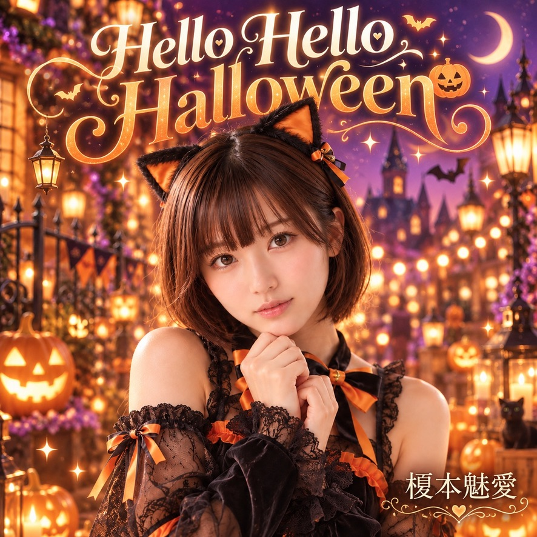

RANKING V3.1
A. SUZUKAおすすめ
recommendationWeightを使った編集おすすめ順です。実人気順位ではありません。


RANKING V3.1
B. サイト人気
GA4実測データを使用します。データ未登録時は順位を表示しません。
データ準備中
RANKING V3.1
C. YouTube人気
YouTube Analytics実測データを使用します。再生数は推測しません。
データ準備中
RANKING V3.1
D. 今週の注目
2026年第38週の決定的アルゴリズム。同じ週は同じ順序です。